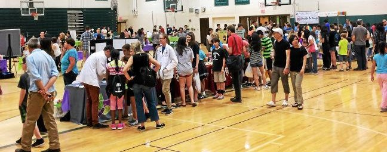

Welcome to SHDN@Home!

Typically, Science and Health Discovery Night (SHDN) is a community event held at Shen High School East in the spring. Every year, students, families, and friends are invited to come explore a range of science-related activities and the booths of visiting STEM organizations.
Due to the pandemic, SHDN will be held virtually in 2021. In the spirit of the original event, the Science National Honor Society (SNHS) put together this website of fun science activities that kids can try anytime! Since the beginning of the 2020-21 school year, high school students have worked to adapt existing booths to a virtual format and create brand new activity tutorials for this website. Try clicking on the booths displayed on the virtual exhibition map below to explore the different activities!
Instructions are found in each booth’s slideshow, along with fun facts that reveal the science behind the activity! Most materials needed for these activities are everyday items you can find around your home. Even so, we have created a materials list, sorted from activities with the least need for additional items to ones that are slightly more involved, so you can find something that uses items you already have – no need to take an extra trip to the store.
SNHS collaborated with other student organizations on this project. We want to thank MakerSpace club, Μu Alpha Theta (Math Honor Society – MHS), and Team 20 (Shen Robotics team) for their contributions to SHDN@Home!
We hope you test out some of these activities, and if you do, we hope you enjoy them! We are looking forward to seeing you in person at Science and Health Discovery Night sometime in the future.